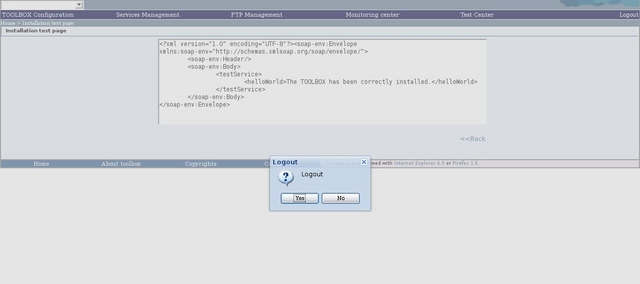

To logout from the TOOLBOX ADMINISTRATOR, click on the "logout" link. It will come shown a confirm request. This operation invalidates the "session", and trying to access a page previously browsed will cause the display of the login page. The same event occurs once elapsed 30 minutes without performing operations.
